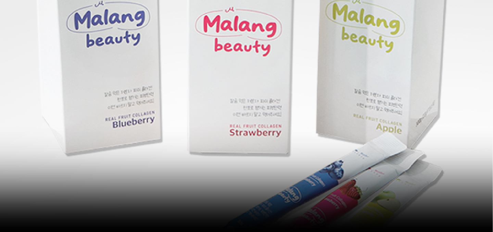

Core Values
-
Inner Beauty Solution
Providing customized functional solutions for healthy beauty.
-Immune support
-Skin health
-Skin elasticity care -
Natural Ingredient Nutrition
Delivering balanced nutrition through carefully selected natural ingredients.
-Nature-derived ingredients
-Healthy formulation
-Nutritional balance support
-

Malrang Beauty Collagen JellyA beauty jelly containing low molecular fish collagen and hyaluronic acid for daily skin care.
-
Jamchelin
A fruit-based prebiotic jelly designed for a healthier lifestyle.